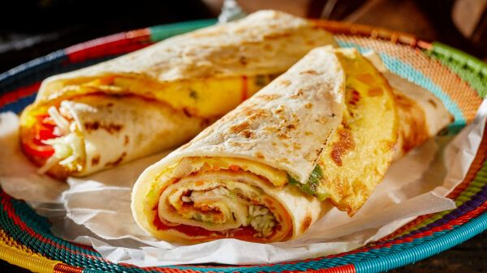

How to make Roleks

Description
Roleks is an East African street dish popularly invented
by Ugandans. It is a delicious meal, just like a cheese sandwich
or a hotdog, it is one very easy snack to make.
Ingredients
These are the Ingredients needed to make a Roleks
- 2 eggs
- Half a Tomato
- Half an Onion
- A bunch of Cilantro (dhania)
- A 1/4 table spoon of salt
- 1 cooked chapati
- 2 table spoons of cooking oil
Preparation steps
These are the steps on how to prepare Roleks
- Beat the 2 eggs well and add salt
- Chop the cilantro (dhania), onion and tomato into small chunks
- Add the chopped cilantro (dhania), onion and tomato into the eggs
- Mix all of the well
- place your cooking pan on heated surface or stove or cooker
for it to heat up for approximately 2 minutes
- Put the cooking oil ito the pan for 30 seconds
- Immediately pour in the egg mixture and let it cook until color
changes to golden brown then remove your eggs from the source of
heat
- Lay your cooked chapati on flat surface (preferably a clean flat
plate) then place the fried eggs on it and roll
Enjoy your Roleks